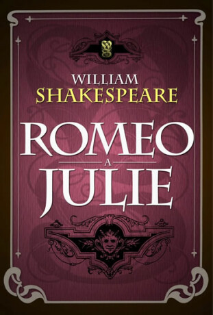

Autor: William Shakespeare
Literární druh: drama
Žánr: tragédie
Období: renesance
Místo děje: Verona, Itálie
Rok vydání: 1597

Hlavním tématem je tragická láska Romea a Julie, které v jejich vztahu brání dlouholetý spor jejich rodin. Dílo ukazuje také konflikt mezi láskou, nenávistí a rodinnými tradicemi.
Mladý, citlivý a romantický muž, který se zamiluje do Julie.
Mladá dívka, která se do Romea zamiluje a je ochotná bojovat za svou lásku.
Romeův přítel, který je veselý, vtipný a odvážný.
Juliin bratranec, který je prudký a často vyvolává konflikty.
Pomáhá Romeovi a Julii a tajně je oddá.
Romeo Montek a Julie Kapuletová pocházejí ze znepřátelených rodin. Přesto se do sebe zamilují. Jejich láska je tajná a bratr Vavřinec je tajně oddá.
Mezi Tybaltem a Merkuciem dojde ke konfliktu. Tybalt Merkucia zabije a Romeo následně zabije Tybalta. Romeo je za trest vyhnán z Verony.
Julie má být provdána za Parise. Bratr Vavřinec proto vymyslí plán, podle kterého Julie vypije nápoj, po kterém bude vypadat jako mrtvá.
Romeo se však o plánu nedozví. Myslí si, že Julie zemřela, a vypije jed. Julie se následně probudí a po zjištění, že Romeo zemřel, se zabije jeho dýkou.
Po jejich smrti si obě rodiny uvědomí, kam jejich dlouholetý spor vedl, a usmíří se.
Dílo ukazuje sílu lásky, ale také následky nenávisti, rodinných sporů a neuváženého jednání.